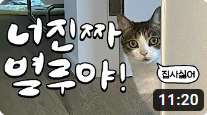
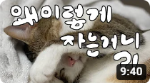
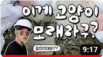
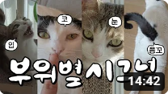
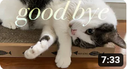

834
834

 공유
공유
조회수 1.6만회 2일전 #네고왕 #벤토나이트
고양이가 매일 쓸 수 밖에 없는 필수품 중의 필수품 고양이 화장실 모래
먼지는 왜 자꾸 나는지, 대체 어떻게 만들길래 그러는건지,,, 왜 나는 아직 모래유목민인건지?
게다가 요즘 트랜드라는 블랜딩 모래는 대체 무엇인지?
고양이가 매일 쓸 수 밖에 없는 필수품 중의 필수품 고양이 화장실 모래
먼지는 왜 자꾸 나는지, 대체 어떻게 만들길래 그러는건지,,, 왜 나는 아직 모래유목민인건지?
게다가 요즘 트랜드라는 블랜딩 모래는 대체 무엇인지?
-
고양이가 '이 행동'을 하지 않는다면 당신, 반가운 존재는 아니군요 미야옹철의 냥냥편치 조회수 33만회 7개월 전
-
잠 자는 자세를 보면 우리집 고양이의 기분과 상태를 알 수 있다?? 미야옹철의 냥냥펀치 조회수 40만회 1년전
-
놀랍습니다! 돌덩이가 고양이 모래로 변하는 과정! 미야옹철의 냥냥펀치 조회수 1.6만회 3일전
-
고양이가 온몸으로 표현하는 '나 아파요'의 신호 미야옹철의 냥냥펀치 조회수 13만회 1개월 전
-
변비고양이 거대결장 16살 고양이 마지막 모습 널 만나 행복했어 Hanoi recipe 조회수 5.3천회 4개월전
댓글만 달아도 펠리스샌드 기부천사 많관부
고양이들이 행복했으면 좋겠어요~~